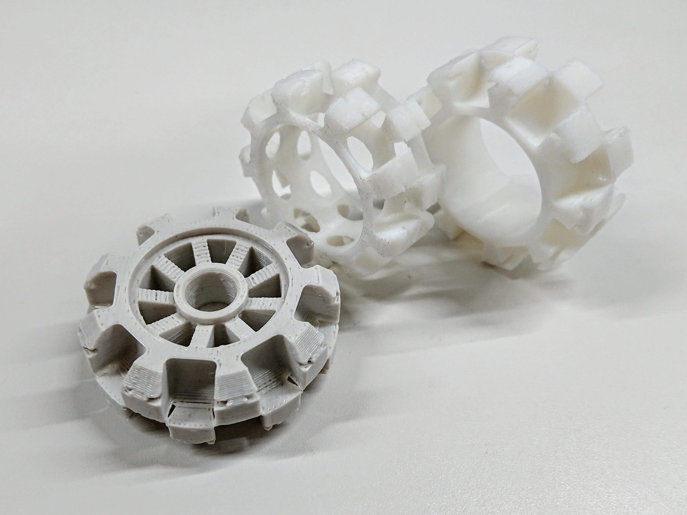

開発録
当初は私自身がロボカップジュニアに参加しており、予算不足からオムニホイールの自作を始めました。
当時は3Dプリンタが手元になかったため、レーザ加工機でアクリル板を重ねる方式で制作しました(図4)。
図4 アクリル板を用いた初期型オムニ
寸法は当時ロボカップジュニアで流行っていた中国のJoinMax社のオムニホイールと互換性をもたせました。
その後3Dプリンタが個人でも使えるようになり、組み立てのしやすさや単価の安さなどを意識した新シリーズの設計に着手しました。
アクリル板を用いた当初のモデルはネジで留めるまで片手が塞がってしまい、特に手の小さい子供などは組み立てにくいものでした。
そこでテーブルに置いたまま組み立てが可能な2作目(図5)を作成しました。
図5 3Dプリンタで印刷した2作目のオムニ
2作目のオムニホイールは組み立てやすいという利点の他に、保守性が高いという利点もありました。
小車輪やボディがモジュール化されているため、製品化されているオムニホイールよりも修理コストを低く抑えることができました。
当時のロボカップジュニアでは高電圧のバッテリが使用可能で、試合中にオムニホイールが壊れたり摩耗することが多かったため、
予算の少ないチームには重要な点でした。
また、衝撃が加わりやすい外側の層に金属製の部品を用いることで, 耐衝撃性を上げることも可能でした。
しかしながら実際にロボカップに参加している小学生に使ってもらったところ、「小車輪の軸が小さく組み立てにくい」という声が上がりました。
また、小学生の小さな手では最後のネジが締めづらそうに見えました。これらの点を改良すべく3作目(図6)の開発に着手しました。
 図6 はめ込み式のオムニホイール
図6 はめ込み式のオムニホイール
この3作目では、小車輪の軸の固定を「挟み込み方式」から「はめ込み方式」に変更しました。
これによって、小さな軸の設置やネジ留めといった手間を省くことができました。また、ネジ穴がなくなったことで、
ホイール中心の形状にも制限がなくなり、肉抜きを行ったり、好きなデザインにすることが可能になりました。

図6 溝のプロトタイプ
3Dプリンタではめ込み可能な溝をバラつきなく印刷するのは難しく、
現在の形に至るまでに数多くのプロトタイプを作成しました(図6)。